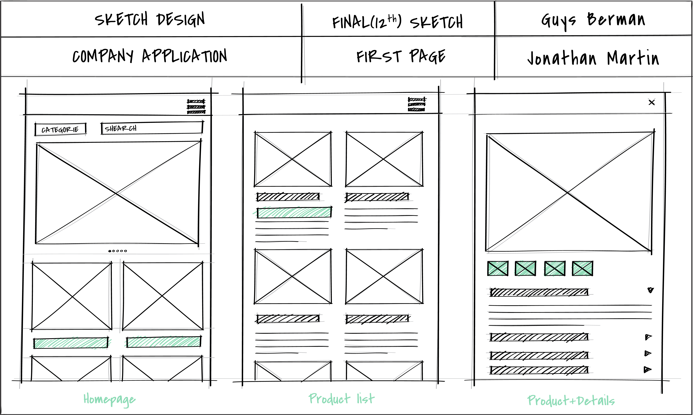
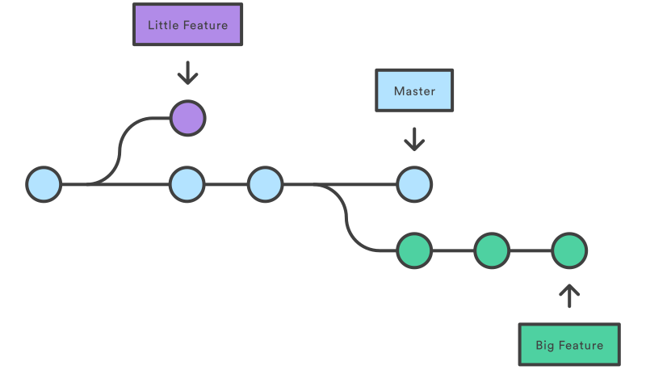

README.md
A README.md file is a simple markdown document that explains what a project is, how to set it up, and how to use it.
Read moreThis page describes the purpose of Wireframe, Branch and Readme.
A README.md file is a simple markdown document that explains what a project is, how to set it up, and how to use it.
Read more
A wireframe is a simple visual layout of a webpage or app. It helps plan structure before writing any code.
Read more
A branch in Git lets you work on new features safely without changing the main project until you are ready.
Read more